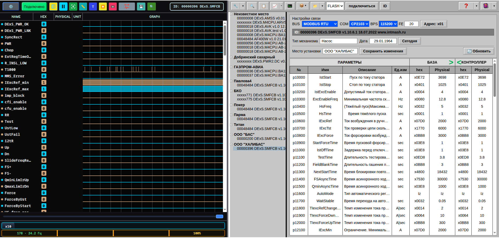

1. Руководство пользователя

1.1. Назначение
Программа Ajuster – это универсальный набор средств, позволяющий эффективно работать с устройствами оснащёнными асинхронным последовательным интерфейсом поддерживающими протоколы передачи данных ModBus RTU и ModBus RTU over TCP/IP.
1.2 Выполняемые функции
Поддержка протоколов ModBus RTU и ModBus RTU over TCP/IP;
Ведение базы оборудования и его уставок
База хранит следующую информацию об устройстве:
- краткая
информация о механизме и месте установки оборудования;
- уставки
параметров;
- дата последнего обслуживания;
### Копирование
параметров из базы в блок, и обратно; ### «Клонирование» блоков, для
создания резерва оборудования (блоков с идентичными параметрами) ###
Осциллографирование/запись параметров - Возможности анализа:
-
Масштабирование развёртки по времени;
- Измерение величины сигналов
в выбранной точке;
- Измерение интервалов времени между
событиями;
- Совмещение в одних координатах до 5 графиков;
-
Запись осциллограмм для последующего анализа с теми же
возможностями;
- Запись .csv файлов мгновенного состояния секции
[RAM] Modbus регистров контроллера
- Запись .xlsx файлов для записи
состояния секций [Flash] и [CD] Modbus регистров контроллера
В верхней части окна расположены основные кнопки управления:
| Кнопка | Назначение |
|---|---|
| 🔧 | Список устройств: обновление, фильтрация по месту установки, типу и т.д. |
| 🔍 | Поиск устройств в сети Modbus |
| 📋 | Создание отчёта по текущей конфигурации |
| 📈 | Осциллограф: показ/скрытие и меню просмотра .rec-файлов |
>_ |
Командная строка для ручного обмена с контроллером |
| 📁 | Открытие INI-файла или папки с устройствами |
| Подключиться | Установить соединение с контроллером |
| ID | Прочитать идентификационную строку устройства |
1.2. Настройки связи
Ниже верхней панели, в правой части экрана, расположены поля настройки связи. Их состав зависит от протокола, выбранного в списке BUS.
Режим MODBUS RTU
Отображаются поля: COM, BPS (скорость), FE (длина кадра) и кнопка Адрес — адрес устройства в сети Modbus.
Режим MODBUS TCP/IP
Отображаются поля: IP — адрес хоста, Port — TCP-порт (по умолчанию 502) и кнопка Адрес.
1.3. Баннер ID
После успешного подключения в поле «ID» появляется строка
идентификации устройства, например:
ID: 00000396 DExS.SMFCB v1.10.6.1 18.07.2022 www.intmash.ru.
Сокращённая версия (серийный номер и тип) выводится в шапке
осциллографа.
1.4. Рисунки

Чтобы добавить реальный скриншот, положите PNG или JPEG в папку
help-src/images/ и укажите его имя в тексте как
.